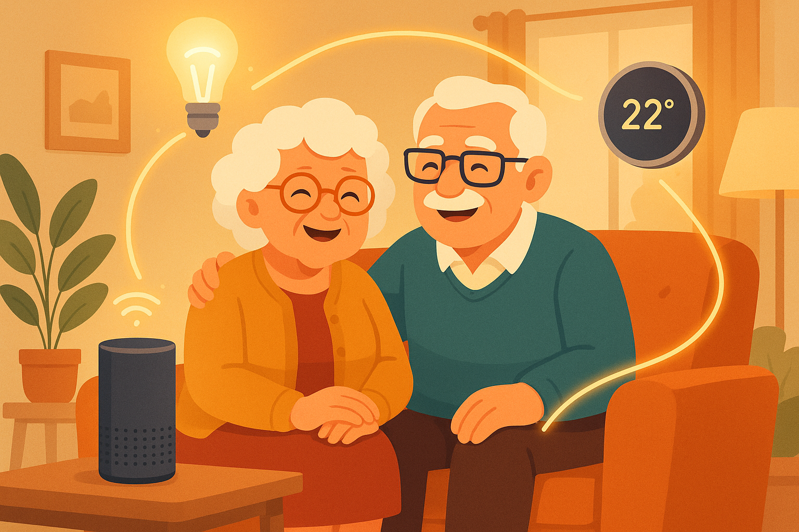
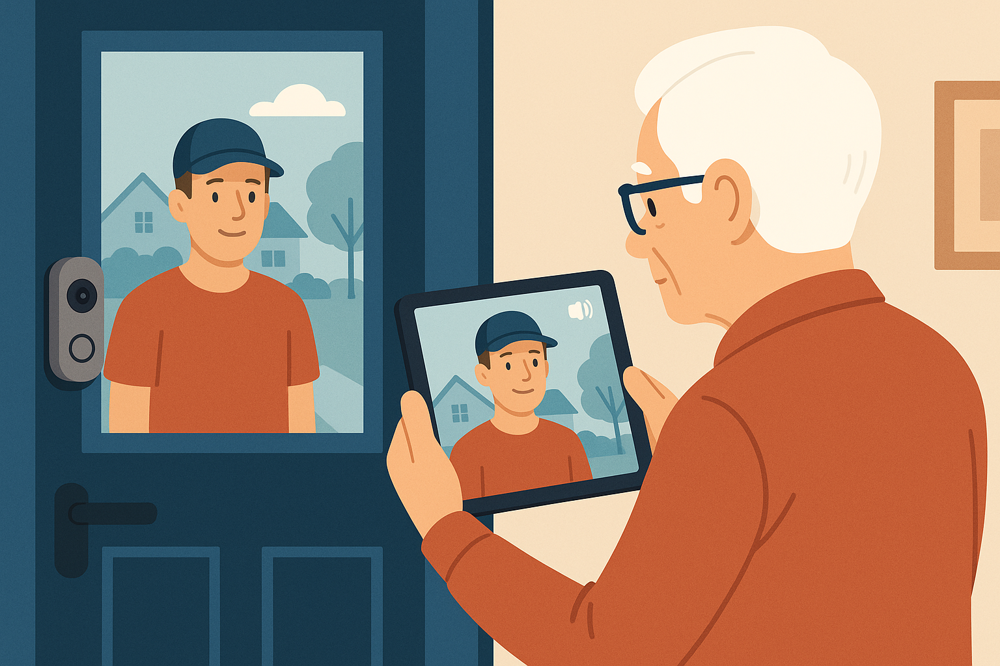

Smart Home Setup for Seniors in Willowdale and North York

Smart home technology can make daily life easier, safer, and more comfortable — without being complicated.
When I mention "smart home" to the seniors I work with in Willowdale and North York, I usually get one of two reactions: excitement tinged with nervousness, or a polite but firm "that's not for me." Both reactions make perfect sense. Smart home technology sounds futuristic and complicated, but the truth is that most of these devices are easier to use than a microwave.
Here's what I mean by "smart home": devices in your house that you can control with your voice or from your phone. Instead of getting up to turn off the lights, you say "Hey Google, turn off the lights" and they turn off. Instead of squinting at a tiny thermostat on the wall, you say "Alexa, set the temperature to 22 degrees" and it adjusts. Instead of wondering who's at the door, you see them on your phone or tablet from your favourite chair.
I've set up smart home devices for dozens of seniors across North York, Willowdale, Don Mills, and Bayview Village, and the response is almost always the same: "Why didn't I do this sooner?" A client in Willowdale told me her smart speaker is the best gift her son ever gave her — she uses it dozens of times a day for timers, weather, music, and even medication reminders.
This guide will walk you through the most useful smart home devices for seniors, explain which ones I recommend and why, and give you step-by-step instructions for setting each one up. We'll start with the simplest devices and work our way up. You don't have to get everything at once — start with one device, get comfortable with it, and add more when you're ready.
Let's make your home a little smarter.
What You Need Before You Start
Before setting up any smart home device, you'll need two things:
- Wi-Fi Internet — Smart devices connect to the internet through your Wi-Fi network. If you already use Wi-Fi for your phone or tablet, you're all set. If you're not sure, look at the top of your phone — if you see the fan-shaped Wi-Fi symbol, you have Wi-Fi.
- A Smartphone or Tablet — You'll need an iPhone, iPad, or Android device to set up smart home devices. The setup usually involves downloading a free app, connecting the device to your Wi-Fi, and customizing settings. After setup, many devices can be controlled entirely by voice.
Device #1: Smart Speaker — Your Command Centre
I always recommend starting with a smart speaker. It's the heart of a smart home, and it's useful even on its own — before you add any other smart devices. A smart speaker is a small speaker you talk to. You can ask it questions, play music, set timers, hear the weather, and much more — all by speaking naturally.
Best Smart Speakers for Seniors
- Google Nest Mini — Small, affordable, excellent voice recognition. ~$40-$60 CAD
- Amazon Echo Dot — Similar to Google Nest, works with Alexa voice assistant. ~$40-$70 CAD
- Google Nest Hub — Has a screen that shows photos, weather, and video calls. ~$100-$130 CAD
- Amazon Echo Show 8 — Screen-based, great for video calls with family. ~$120-$170 CAD
- Apple HomePod Mini — Best if your whole family uses iPhones. ~$130 CAD
My recommendation for most seniors: the Google Nest Hub (with screen) or the Google Nest Mini (without screen). Google's voice recognition is the most accurate and natural-sounding.
How to Set Up a Google Nest Mini:
- Plug the speaker into a power outlet
- On your phone or tablet, download the "Google Home" app from the App Store or Google Play Store
- Open the app and tap "Set up a device"
- The app will find your new speaker automatically
- Follow the on-screen instructions to connect it to your Wi-Fi
- Choose which room the speaker is in (Kitchen, Living Room, Bedroom, etc.)
- Say "Hey Google" to test it — try asking "Hey Google, what's the weather today?"

Setting up a smart speaker takes about 5 minutes — plug it in, connect to Wi-Fi, and start talking to it.
Useful Voice Commands for Daily Life:
Device #2: Smart Light Bulbs — No More Getting Up to Switch Lights
Smart light bulbs screw into your existing light fixtures — no rewiring needed. Once connected, you can turn them on and off with your voice, your phone, or on an automatic schedule. This is especially helpful if:
- You have trouble reaching light switches
- You want lights to turn on automatically when it gets dark
- You want to turn off all the lights from bed without getting up
- You want lights to turn on automatically when you arrive home
Recommended Smart Light Bulbs
- Philips Hue White (starter kit) — Most reliable, excellent quality. ~$80-$100 CAD for 2-bulb starter
- LIFX Mini White — No hub required, connects directly to Wi-Fi. ~$20-$30 CAD per bulb
- Wyze Bulb — Budget-friendly but still works great. ~$10-$15 CAD per bulb
My recommendation: LIFX Mini White for most seniors — no extra hub needed, easy setup, and you just need to replace your regular bulb with the smart one.
How to Set Up a Smart Light Bulb (LIFX as Example):
- Screw the smart bulb into your lamp or light fixture (just like a regular bulb)
- Turn the light switch ON
- Download the LIFX app from the App Store or Google Play
- Open the app and follow the instructions to connect the bulb to your Wi-Fi
- Name the light (e.g., "Living Room Lamp" or "Bedroom Light")
- To connect it to your smart speaker, open the Google Home app → Settings → Works with Google → search for LIFX → link your account
Now you can say:
Device #3: Smart Plugs — Make Any Device Smart
A smart plug is a simple, affordable device that plugs into your wall outlet. You then plug any regular device into the smart plug, and now you can control that device with your voice or phone. It's the easiest way to make existing devices "smart."
Great uses for smart plugs:
- Table lamps: Control with voice or schedule to turn on at sunset
- Coffee maker: Schedule it to turn on at 7 AM so coffee is ready when you wake up
- Christmas/holiday lights: Set a schedule so they turn on and off automatically
- Fan or space heater: Turn on/off from across the room
- Hard-to-reach devices: Anything plugged into an outlet behind furniture
Recommended Smart Plugs
- TP-Link Kasa Smart Plug — Very reliable, easy app. ~$15-$25 CAD
- Amazon Smart Plug — Works seamlessly with Alexa. ~$25-$35 CAD
- Wyze Plug — Most affordable option. ~$10-$15 CAD
How to Set Up a Smart Plug:
- Plug the smart plug into your wall outlet
- Download the plug's app (e.g., Kasa for TP-Link plugs)
- Open the app and tap "Add Device" → "Smart Plug"
- Follow the instructions to connect it to your Wi-Fi
- Name the plug (e.g., "Coffee Maker" or "Living Room Lamp")
- Plug your device (lamp, coffee maker, etc.) into the smart plug
- Link it to your smart speaker through the Google Home or Alexa app

Smart plugs can make almost any regular device controllable by voice — they're one of the best values in smart home technology.
Device #4: Smart Thermostat — Comfort and Savings
A smart thermostat replaces your existing thermostat and lets you control your home's temperature by voice, phone, or on a schedule. This is particularly valuable in our North York climate, where we deal with extreme cold in winter and humid heat in summer.
Benefits for seniors:
- Voice control: Adjust temperature without getting up or squinting at tiny buttons
- Savings: Smart thermostats learn your habits and save 10-15% on heating/cooling bills
- Family monitoring: Your children can check remotely that your home is a comfortable temperature
- Automatic scheduling: Set it warmer at night and cooler during the day without touching it
Recommended Smart Thermostats
- Google Nest Thermostat — Easy to use, learns your preferences. ~$170-$250 CAD
- ecobee Smart Thermostat — Canadian company, includes room sensor. ~$220-$300 CAD
Note: Many Ontario energy companies offer rebates for smart thermostats. Check with your provider (Enbridge, Toronto Hydro) for current offers — you might save $50-$100 off the purchase price.
Useful Thermostat Voice Commands:
Device #5: Video Doorbell — See Who's at the Door
A video doorbell replaces your regular doorbell with one that has a camera. When someone rings the bell (or even approaches your door), you get a notification on your phone showing a live video feed. You can see and talk to the person at your door from anywhere — from your living room, from bed, or even from across town.
Why seniors love video doorbells:
- Safety: See who's at the door before opening it — especially helpful for avoiding door-to-door scams
- Convenience: Talk to delivery drivers without going to the door
- Package monitoring: Get an alert when a package is delivered
- Peace of mind: Family members can check in and see that packages are delivered safely
- Mobility: If you have trouble getting to the door quickly, you can see and respond to visitors from your phone or tablet
Recommended Video Doorbells
- Google Nest Doorbell (battery) — No wiring needed, excellent video quality. ~$220-$280 CAD
- Ring Video Doorbell — Very popular, works with Alexa. ~$130-$250 CAD
The battery-powered versions are the easiest to install — you literally just mount them next to your door and charge them every few months. No electrician needed.

A video doorbell lets you see who's at your door without getting up — perfect for safety and convenience.
Getting Everything to Work Together
Once you have a few smart devices, the real magic happens when they work together. Here are some examples of things you can set up:
"Goodnight" Routine:
Say "Hey Google, goodnight" and the following happens automatically:
- All lights in the house turn off
- The thermostat adjusts to your sleeping temperature
- The front door camera activates notifications
- Your smart speaker plays soft music or nature sounds for 30 minutes
"Good Morning" Routine:
Say "Hey Google, good morning" and:
- The kitchen lights turn on
- The coffee maker starts (via smart plug)
- Your smart speaker reads today's weather forecast
- The thermostat adjusts to your daytime temperature
"I'm Leaving" Routine:
Say "Hey Google, I'm leaving" and:
- All lights turn off
- The thermostat goes to energy-saving mode
- You get a doorbell notification if anyone approaches while you're out
These routines are set up in the Google Home or Alexa app under "Routines." I love setting these up for my clients — they save time, energy, and make daily life feel smoother.
Privacy and Security Considerations
I want to address a concern that many seniors rightfully have: privacy. Smart speakers and cameras are connected to the internet, and it's natural to wonder if someone could be listening or watching.
Here's what you should know:
- Smart speakers only listen after hearing the wake word ("Hey Google" or "Alexa"). They don't record your conversations. You can verify this by checking your activity history in the Google Home or Alexa app.
- You can mute the microphone. Every smart speaker has a physical mute button. When pressed, the microphone is disconnected at the hardware level — it physically cannot listen. Use this when you want complete privacy.
- Video doorbell footage is encrypted. Only you (and anyone you give access to) can see the video from your doorbell.
- Use strong Wi-Fi passwords. The most important security measure for all smart home devices is a strong, unique Wi-Fi password. If your Wi-Fi password is something simple like "password123," change it to something longer and more complex.
- Keep devices updated. When your devices notify you of updates, install them — these often include security improvements.
- Stick to well-known brands. Devices from Google, Amazon, Apple, Philips, and other major brands have dedicated security teams. Avoid unknown brands from unfamiliar websites.
How Much Does a Smart Home Setup Cost?
You don't need to spend a fortune. Here's what a typical starter setup looks like in Canadian dollars:
- Starter Setup (voice control only):
- Google Nest Mini: ~$50
- Total: ~$50
- Basic Smart Home:
- Google Nest Mini: ~$50
- 2 Smart Light Bulbs: ~$40
- 1 Smart Plug: ~$20
- Total: ~$110
- Comfortable Smart Home:
- Google Nest Hub (with screen): ~$120
- 4 Smart Light Bulbs: ~$80
- 2 Smart Plugs: ~$40
- Smart Thermostat: ~$200
- Total: ~$440
- Full Setup:
- Google Nest Hub: ~$120
- Google Nest Mini (bedroom): ~$50
- 6 Smart Light Bulbs: ~$120
- 3 Smart Plugs: ~$60
- Smart Thermostat: ~$200
- Video Doorbell: ~$250
- Total: ~$800
I always tell my clients in North York: start small. Get a smart speaker, use it for a month, and see how you like it. Then add a smart bulb or plug. Build your smart home gradually at your own pace and budget.
Troubleshooting Common Smart Home Problems
Problem: Smart Device Won't Connect to Wi-Fi
- Make sure your Wi-Fi is working (can you browse the internet on your phone?)
- Make sure the device is close to your Wi-Fi router during setup
- Restart your Wi-Fi router (unplug for 30 seconds, plug back in)
- Make sure you're entering the correct Wi-Fi password
- Some smart devices only work on 2.4 GHz Wi-Fi (not 5 GHz) — check the device's instructions
Problem: Smart Speaker Doesn't Understand Me
- Speak clearly and at a normal pace
- Make sure you start with the wake word: "Hey Google" or "Alexa"
- Try to reduce background noise (turn down the TV)
- Make sure the microphone isn't muted (check for a red/orange light)
Problem: Smart Light Won't Turn On with Voice
- Check that the physical light switch is turned ON
- Make sure the light is connected to Wi-Fi (check in the app)
- Try saying the exact name of the light: "Hey Google, turn on [name you gave it]"
- Make sure the light is linked to your smart speaker in the Google Home or Alexa app
Frequently Asked Questions
Do smart home devices work without internet?
Most smart home devices require a Wi-Fi internet connection to work with voice commands and phone control. However, smart lights can usually still be turned on and off using their physical switch if the internet goes out. Once internet is restored, everything goes back to normal automatically.
Are smart home devices safe from hackers?
Devices from reputable brands (Google, Amazon, Apple, Philips) have strong security built in and receive regular security updates. The biggest security measure you can take is to use a strong Wi-Fi password. Avoid cheap, no-name smart devices from unfamiliar online sellers — they may not have proper security standards.
What's the easiest smart home device to start with?
A smart speaker, hands down. Something like the Google Nest Mini ($40-$60) or Amazon Echo Dot. It plugs in, connects to Wi-Fi in about 5 minutes, and immediately responds to voice commands for weather, timers, music, alarms, questions, and more. It's useful on its own and serves as the hub for adding other smart devices later.
How much does a basic smart home setup cost?
You can start for as little as $50 with just a smart speaker. A basic setup with a speaker, a couple of smart bulbs, and a smart plug runs about $110-$150. You can build up from there as your comfort level and interest grows.
Can my children or grandchildren control my smart home remotely?
Yes, if you give them access through the Google Home or Alexa app. This can be helpful for family members who want to check that your thermostat is at a comfortable temperature or that your lights are on in the evening. You control who has access and can revoke it anytime.
What happens during a power outage?
Smart home devices won't work during a power outage (just like any other electrical device). When power is restored, most devices reconnect to Wi-Fi automatically and resume working. You won't need to set anything up again.
Want Help Setting Up Your Smart Home?
Smart home setup is one of my favourite things to help with. I'll come to your home, recommend the right devices for your needs and budget, set everything up, teach you how to use voice commands, and make sure everything works perfectly together. Many of my clients in Willowdale and North York are surprised how quickly they become comfortable with it.
$45/hour with satisfaction guaranteed
Call or Text: 289-203-4346Serving North York, Willowdale, Bayview Village, Don Mills & surrounding areas
Related Articles
- Setting Up Email on iPhone for North York Seniors
- How North York Seniors Can Avoid Common Tech Scams
- Speed Up Your Slow Computer: Easy Fixes for Toronto Seniors
- Organizing Family Photos on iPad – North York Tech Tips
- Computer Running Slow? 5 Simple Fixes That Actually Help
Anthony is a tech support specialist serving seniors in North York, Willowdale, and surrounding areas. He provides patient, in-home help with smart home setup, iPhone and iPad assistance, computer support, and scam protection. He holds a Bachelor of Commerce from TMU and certifications in AI Engineering from IBM and Google.